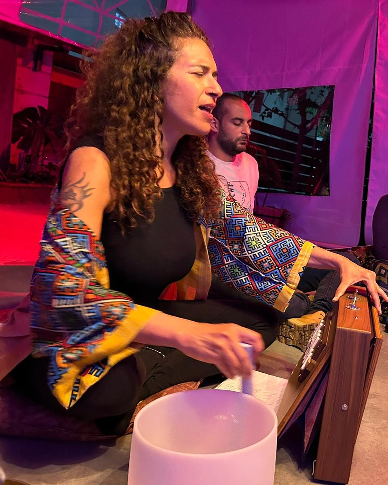
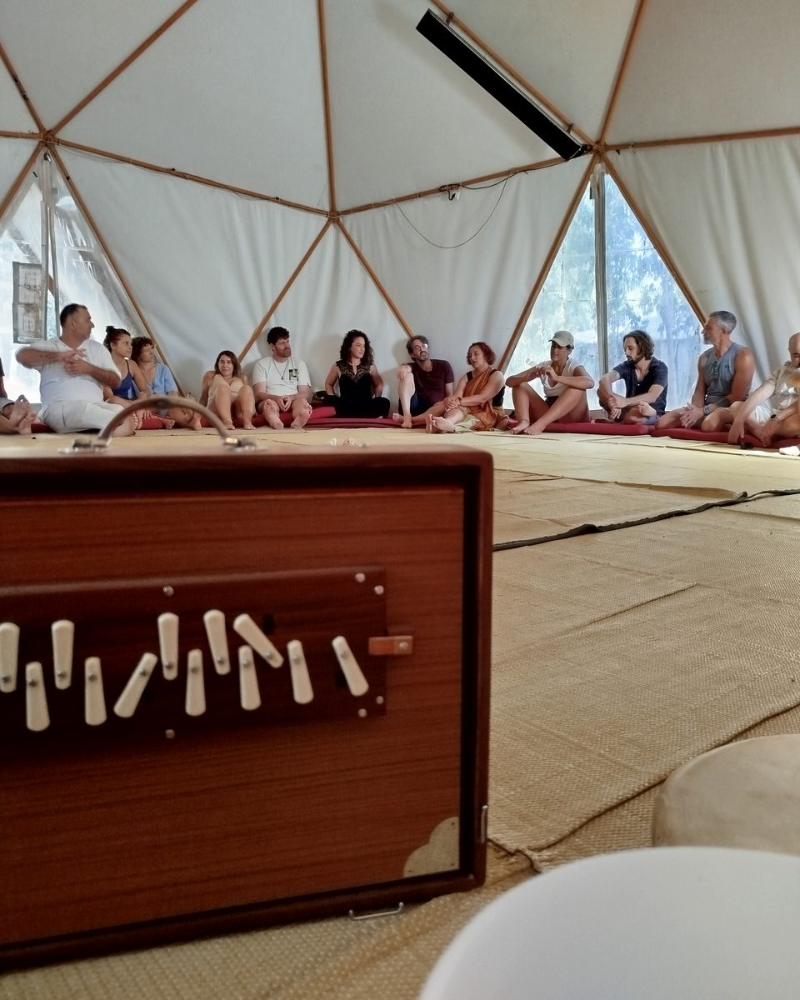
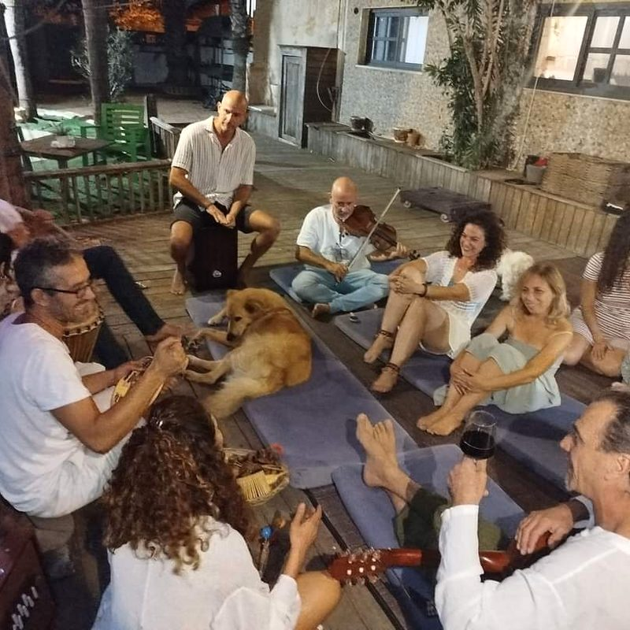
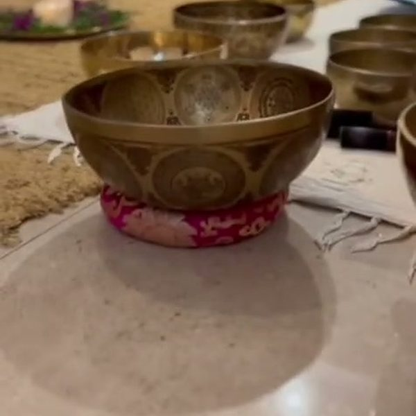
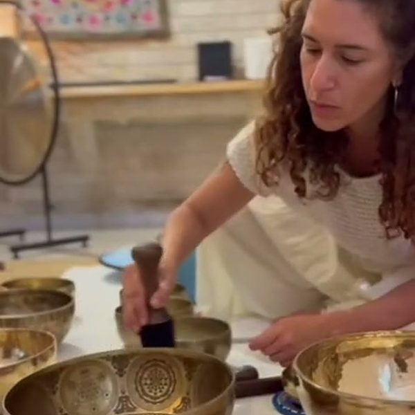

▢מירב עם קערות/גונגimages/kol-hero.jpg

על המרחב
יש דברים שהמילים לא תמיד יודעות לומר. דרך הצליל, הנשימה, הקול והשקט, אנחנו יכולים להקשיב פנימה ולפגוש מקומות בתוכנו שמבקשים תשומת לב. קול הנשמה הוא מרחב של צלילים מרפאים, מעגלי שירה, עבודה קולית ומסעות חווייתיים המשלבים הקשבה, נוכחות וחיבור פנימי.
מה כולל המרחב
- סאונד הילינג
- מעגלי שירה ושירה שמאנית
- עבודה קולית וביטוי דרך הקול
- קערות קריסטל, קערות טיבטיות, גונג וכלי נגינה נוספים
- מסעות בצלילים ובתדרים
- מפגשים קבוצתיים ואישיים, בהתאם לשירותים המוצעים
▢כלי נגינהimages/kol-1.jpg

גלריה
▢מעגל שירהimages/kol-2.jpg

▢קערות קריסטלimages/kol-3.jpg

▢גונגimages/kol-4.jpg

מקום לתמונות ולסרטונים מהמפגשים. תמונות משתתפים יפורסמו רק בהסכמתם.
שאלות נפוצות
למי זה מתאים?
[יושלם: למי המרחב מיועד ומה לא צריך להביא איתכם.]
מה קורה במפגש?
[יושלם: תיאור מפגש טיפוסי.]
איך מצטרפים?
אפשר לפנות דרך טופס יצירת הקשר או לבחור מפגש קרוב בלוח האירועים.